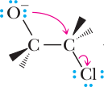
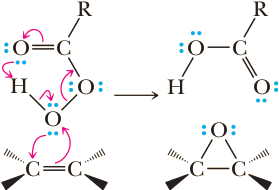
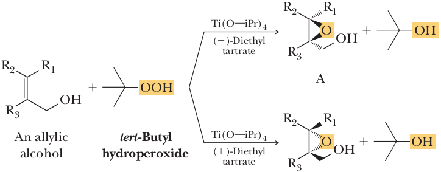
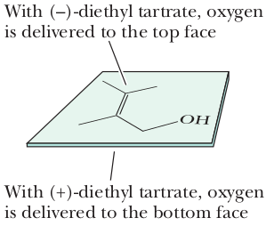

Epoxides: Structure and Nomenclature
Epoxide: A cyclic ether in which oxygen is one atom of a three-membered ring.
Although epoxides are technically classed as ethers, we discuss them separately because of their exceptional chemical reactivity compared with other ethers. Simple epoxides are named as derivatives of oxirane, the parent epoxide. Where the epoxide is a part of another ring system, it is named using the prefix epoxy.
(Ethylene oxide)
(cis-2-Butene oxide)

(Cyclohexene oxide)
Common names of epoxides are derived by giving the name of the alkene from which the epoxide is formally derived followed by the word ‘‘oxide” an example is cis-2-butene oxide.
Synthesis of Epoxides
Ethylene Oxide
Ethylene oxide, one of the few epoxides synthesized on an industrial scale, is prepared by passing a mixture of ethylene and air (or oxygen) over a silver catalyst.
| 2CH2=CH2 | + | O2 | Ag ⟶ |
2 | Oxirane (Ethylene oxide) |
This method only works well for the production of oxirane from ethylene. As a result, other methods have been developed for the production of epoxides.
Internal Nucleophilic Substitution in Halohydrins
One method for the preparation of epoxides from alkenes involves (1) treating the alkene with chlorine or bromine in water to form a chlorohydrin or bromohydrin followed by (2) treating the halohydrin with a base to bring about intramolecular displacement of Cl–. These steps convert propene first to 1-chloro-2-propanol, and then to methyloxirane (propylene oxide).
| 2CH3CH2=CH2 Propene | Cl2, H2O ⟶ |
 1-Chloro-2-propanol 1-Chloro-2-propanol(a chlorohydrin)(racemic) |
NaOH, H2O ⟶ | Methyloxirane (Propylene oxide) (racemic) |
We studied the reaction of alkenes with chlorine or bromine in water to form halohydrins and saw that it is both regioselective and stereoselective (for an alkene that shows cis-trans isomerism, it is also stereospecific). Conversion of a halohydrin to an epoxide with base is stereoselective as well and can be viewed as an internal SN2 reaction. Hydroxide ion or other base abstracts a proton from the halohydrin hydroxyl group to form an alkoxide ion, a good nucleophile, which then displaces halogen on the adjacent carbon. As with all SN2 reactions, attack of the nucleophile is from the backside of the C—X bond and causes inversion of configuration at the site of substitution.
|  | internal SN2 ⟶ |
An Epoxide | + Cl− |
Note that this displacement of halide by the alkoxide ion can also be viewed as an intramolecular variation of the Williamson ether synthesis. In this case, the displacing alkoxide and leaving halide ions are on adjacent carbon atoms.
Oxidation of Alkenes with Peroxycarboxylic Acids
The most common laboratory method for the synthesis of epoxides from alkenes is oxidation with a peroxycarboxylic acid (a peracid). Three of the most widely used peroxyacids are meta-chloroperoxybenzoic acid (MCPBA), the magnesium salt of monoperoxyphthalic acid (MMPP), and peroxyacetic acid.
(MCPBA)
(MMPP)
(Peracetic acid)
Following is a balanced equation for the epoxidation of cyclohexene by a peroxycarboxylic acid. In the process, the peroxycarboxylic acid is reduced to a carboxylic acid.
 Cyclohexene Cyclohexene |
+ | Peroxyacetic acid (Peracetic acid) |
⟶ CH2Cl2 (The solvent) |
1,2-Epoxycyclohexane (Cyclohexene oxide) |
+ | CH3COOH Acetic acid |
For an alkene that shows cis-trans isomerism, epoxidation is also stereospecific: the stereochemistry of the product depends on the stereochemistry of the starting alkene. Epoxidation of cis-2-butene, for example, yields only the meso compound cis-2,3-dimethyloxirane, and epoxidation of trans-2-butene yields only the enantiomers of trans-2,3-dimethyloxirane.
 trans-2-Butene trans-2-Butene |
RCO3H ⟶ |
(2R,3R)-2,3-dimethyloxirane | + | (2S,3S)-2,3-dimethyloxirane |
| trans-2,3-Dimethyloxirane (A pair of enantiomers) |
A mechanism for epoxidation by a peroxyacid must take into account the following facts. (1) The reaction takes place in nonpolar solvents, which means that the reaction cannot involve the formation of ions or any species with significant separation of unlike charges. (2) The reaction is stereospecific, with complete retention of the alkene configuration, which means that even though the π bond of the carbon-carbon double bond is broken, at no time is there free rotation about the remaining σ bond. Following is a mechanism consistent with these observations.
Mechanism Epoxidation of an Alkene by RCO3H
The bond-making and bond-breaking steps are thought to be concerted, or nearly so.
The concerted formation of the two C—O bonds of the epoxide ensures that the reaction is stereospecific; that is, that cis alkenes give cis epoxides and trans alkenes give trans epoxides.
Sharpless Asymmetric Epoxidation
In 1980, Professor Barry Sharpless (then at the MIT) and co-workers reported a method that has since become one of the most valuable tools for chiral synthesis. The Sharpless asymmetric epoxidation is a method for converting allylic alcohols to chiral epoxy alcohols with very high enantionselectivity (i.e. preference of one enantiomer rather than formation of a racemic mixture). In recognition of this and other work in asymmetric oxidation methods, Sharpless received half of the 2001 Nobel Prize in Chemistry. It involves treating the allylic alcohol with tert-butyl hydroperoxide, Ti(IV) tetraisopropoxide [Ti(O—iPr)4], and a specific stereoisomer of a tartrate ester. Recall that tartaric acid has two chiral centers and exists as three stereoisomers: a pair of enantiomers and a meso compound. The form of tartaric acid used in the Sharpless epoxidation is either pure (+)-diethyl tartrate or its enantiomer, (-)-diethyl tartrate. The tert-butyl hydroperoxide is the oxidizing agent and must be present in molar amounts. Titanium tetraisopropoxide and diethyl tartrate combine to make the active catalyst and are present in lesser amounts, generally 5 to 10 mole percent. What is remarkable about the Sharpless epoxidation is that it is stereospecific based on the diethyl tartrate added; either enantiomer of an epoxide can be produced depending on which enantiomer of diethyl tartrate is used. If the (-)-enantiomer is used, the product is enantiomer A. If the (+)-enantiomer is used, the product is enantiomer B.
When predicting the stereochemistry of a Sharpless epoxidation product, you will find it helpful to draw the allylic alcohol in the same orientation each time, for example, as shown below.
When drawn in this manner, the (-)-tartrate catalyzes delivery of the epoxide oxygen from the top face of the alkene; the (+)-tartrate catalyzes its delivery from the bottom face. The mechanism of this catalyzed epoxidation has been studied in detail and involves formation of a chiral complex in which the carbonyl oxygen of diethyl tartrate displaces one of the isopropoxide groups on titanium. When the R—OOH oxidizing agent is added, it displaces a second isopropoxide group. Finally, the oxygen of the allylic alcohol displaces a third isopropoxide group. Thus, although neither the alkene nor the ROOH oxidizing agent is chiral, both are now held in a fixed stereochemical relationship to the other in the chiral environment created by the diethyl tartrate-titanium complex. In this chiral environment, oxygen is now delivered to either the top face or the bottom face of the alkene, depending on which enantiomer of diethyl tartrate is present. For their pioneering work in the field of enantioselective synthesis, Sharpless (along with William Knowles and Ryoji Noyori) received the 2001 Nobel Prize in chemistry.
Glycidol
Glycidol (2,3-epoxypropan-1-ol) has become an important key intermediate for the preparation of chemicals, pharmaceuticals, and bioactive compounds. It was used for the preparation of compounds containing epoxide functionality. For example, reaction of glycidol with isocyanates yields glycidyl urethanes as commercially important materials. A part of the reactivity of glycidol depends on the oxiran ring and acts as an alkylating agent.
 Allyl alcohol Allyl alcohol | + | tert-Butyl hydroperoxide | (-)-DIPT [Ti(O—iPr)4 ⟶ | -Glycidol.png) (R)-Glycidol (R)-Glycidol |
| (+)-DIPT [Ti(O—iPr)4 ⟶ | -Glycidol.png) (S)-Glycidol (S)-Glycidol |
However, because glycidol is one of the more sensitive epoxy alcohols to ring-opening reactions and also is a water soluble molecule, isolation from the stoichiometric asymmetric epoxidation is difficult and very little glycidol. With the use of a molecular sieves, it is possible to isolate optically active glycidol of 88–92% ee in yields of 50–60%.4 As a result of these improvements both enantiomers of glycidol are now available commercially.
Glycidol is used in the pharmaceutical industry to produce beta-blockers, which are used as heart medicines. Many scientists have identified Sharpless’ epoxidation as the most important discovery in the field of synthesis during the past few decades.